Explore Genoa
A Brief History
Genoa was a maritime republic whose merchants and bankers financed expeditions across the Mediterranean from the 11th century onward. Christopher Columbus was born here, and the city's palazzi dei rolli, rebuilt port, and narrow caruggi record republican government, Spanish Habsburg rule, and 19th-century industrial growth along the Ligurian coast.
Attractions Map
Top Sights & Activities
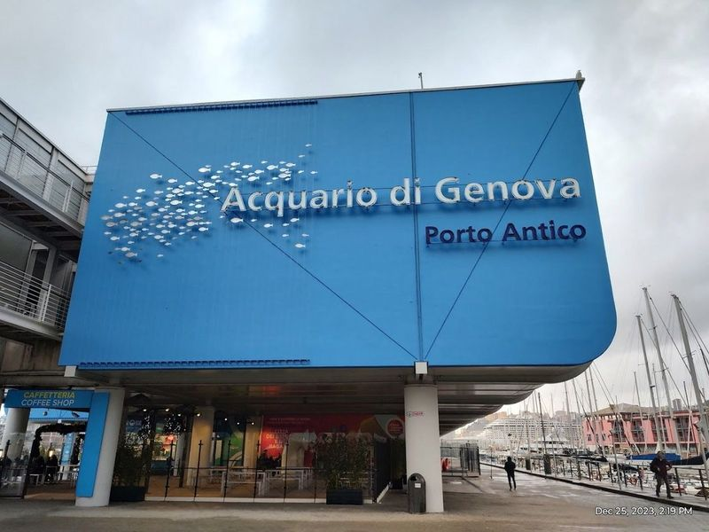
Acquario di Genova
The Aquarium of Genoa is a remarkable destination located in the historic Porto Antico, an area that has undergone significant transformation over the centuries. Once a bustling hub for maritime activities, this waterfront locale was revitalized during the 1992 Expo through the visionary work of architect Renzo Piano.
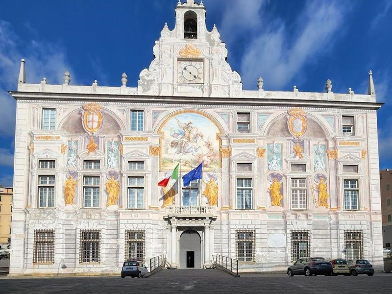
Palazzo San Giorgio
Palazzo San Giorgio, also known as the Palace of St. George, is a historic monument located in the heart of Porto Antico, Genoa's bustling port neighborhood. This famed palace, dating back to 1290, features a striking exterior adorned with vibrant frescoes depicting St. George slaying a dragon. Once serving as a prison and rumored to have housed Marco Polo, the palace now houses a refined restaurant renowned for its meticulous attention to detail and exquisite Mediterranean cuisine.
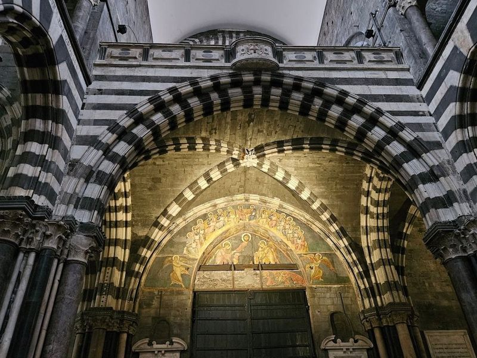
Cattedrale di San Lorenzo
Nestled in the heart of Genoa, the Cattedrale di San Lorenzo stands as a example of Romanesque architecture, characterized by its striking black-and-white striped façade. This magnificent cathedral, constructed between the 12th and 14th centuries, boasts an interior adorned with exquisite frescoes and houses unique holy relics that draw visitors from all over. As you stroll along Via San Lorenzo, encounter this landmark flanked by two majestic lions at its entrance.
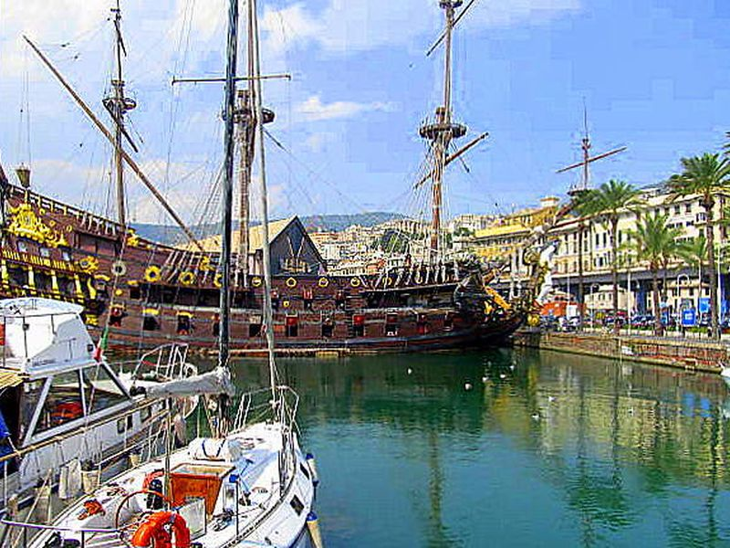
Porto Antico
A historic port area revitalized with a variety of attractions, restaurants, shops, and cultural sites, offering beautiful views of the harbor. The site forms part of Porto Antico's documented civic and cultural landscape within Genoa, with archives and visitor information available from municipal or regional heritage authorities.
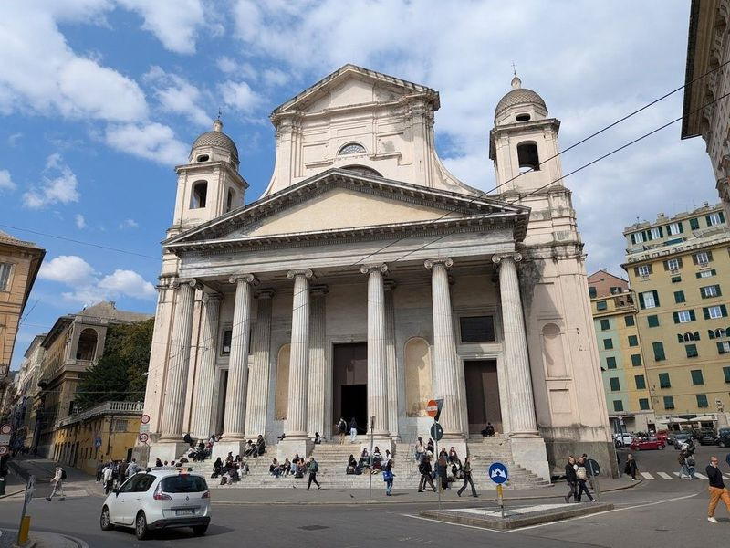
Basilica della Santissima Annunziata del Vastato
Nestled in the heart of Genoa, the Basilica della Santissima Annunziata del Vastato is a testament to 16th-century architecture and artistry. This historic Catholic cathedral boasts an opulent interior adorned with intricate frescoes and gilded details that transport visitors into a world of divine beauty. The grand vaulted ceilings are held aloft by magnificent pink and white marble columns, creating an atmosphere of awe as you explore its sacred spaces.
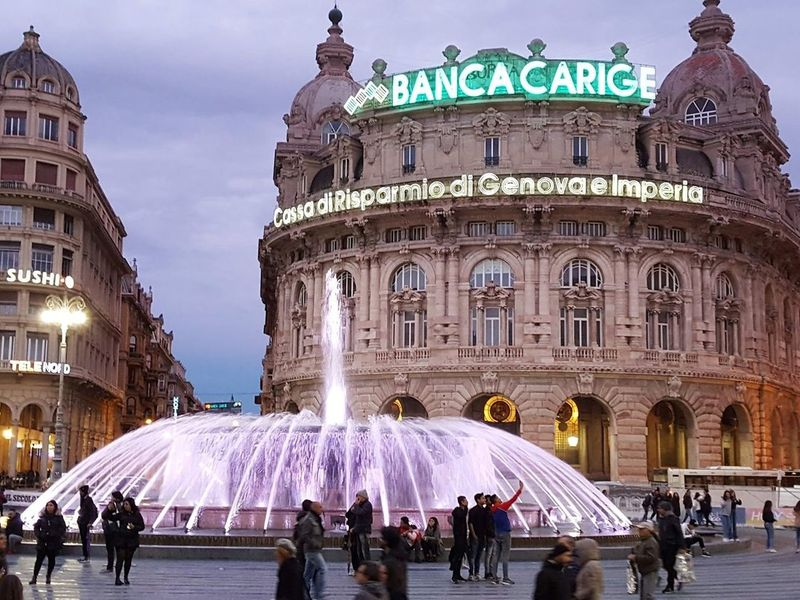
Piazza De Ferrari
Piazza De Ferrari is a vibrant city square in Genoa, renowned for its 1930s bronze fountain and as a hub for cultural institutions. This lively location serves as an ideal starting point for exploring the city, whether by bicycle along scenic routes from the coastline to the historic center or venturing into picturesque regional parks.
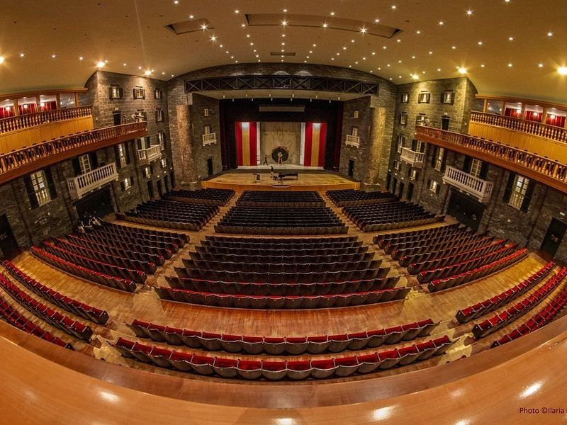
Carlo Felice Theater
Teatro Carlo Felice is a grand and historic theater that resembles a town square, serving as a venue for regular opera and classical concerts. Originally established in 1828, the theater endured damage during World War II but was reconstructed with advanced technology, making it technologically advanced theaters in Europe. The combination of ancient architectural elements and modern technological features creates an exceptional artistic experience.
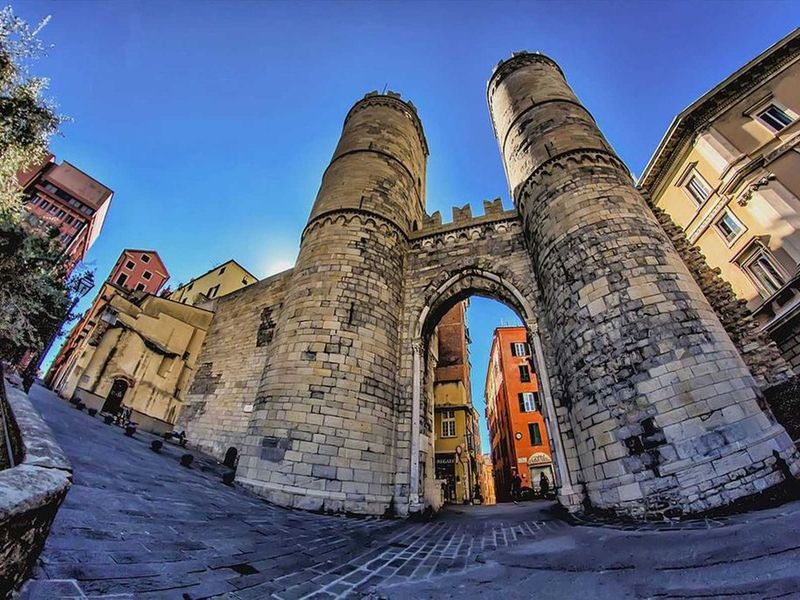
Porta Soprana
Porta Soprana is a grand gate with two impressive circular towers that served as an entrance to the city and were part of the 12th-century defensive walls in Genoa. It has been restored in the 19th and 20th centuries and is also known as St. Andrea Towers due to its proximity to an ancient convent. Visitors can purchase a combined ticket for access to both the towers and the House of Columbus, which is located nearby.
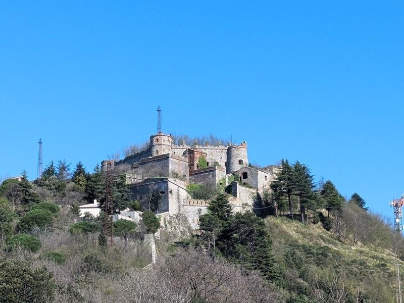
Natural Area Parco delle Mura
Natural Area Parco delle Mura, also known as the Park of the City Walls, is a protected forested mountain area covering 617 hectares around Genoa. The park features a network of hiking trails that connect hilltop forts built between the 17th and 19th centuries.
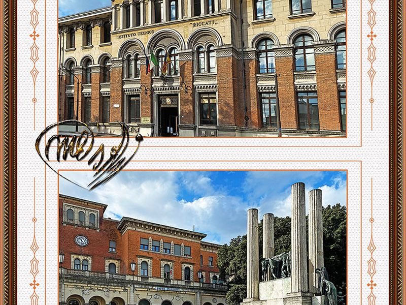
Piazza della Vittoria
A large square featuring the monumental Victory Arch, built to commemorate the fallen of World War I, surrounded by green spaces and impressive buildings. The site forms part of Piazza della Vittoria's documented civic and cultural landscape within Genoa, with archives and visitor information available from municipal or regional heritage authorities.
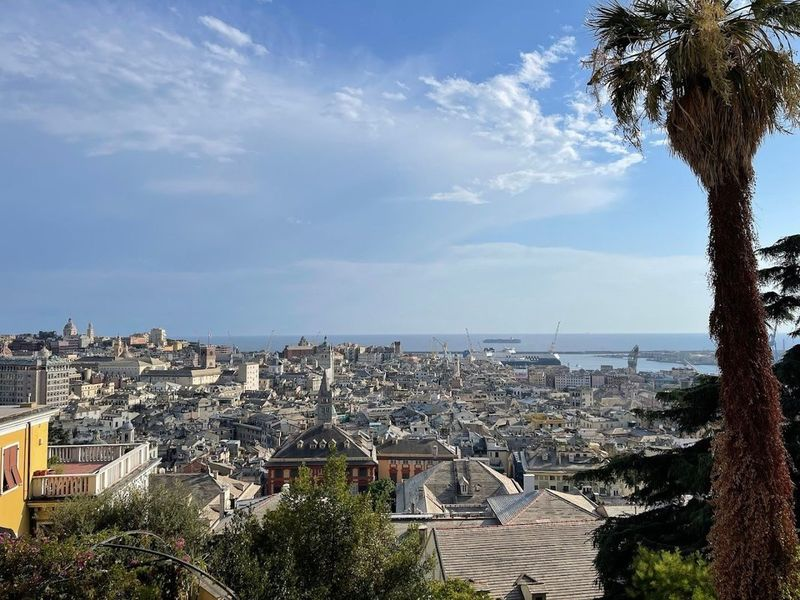
Belvedere Castelletto
Belvedere Castelletto is a must-visit hilltop park in Genoa, offering panoramic views of the city and the sea. reach this viewpoint by climbing long staircases or taking an elevator. The trip up is definitely worth it as be rewarded with a whole new perspective on the city. It's also recommended to visit at night for an incredible view.
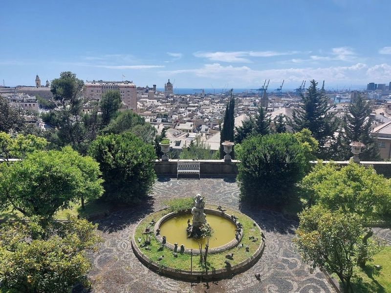
Villetta Di Negro
Villetta Di Negro is a charming park in the heart of Genoa, featuring a picturesque waterfall and the Edoardo Chiossone Oriental Art Museum housed in a reconstructed villa. Visitors describe it as a hidden gem, with winding paths that lead to the waterfall and through artificial caves. The park offers panoramic views of Genoa from different vantage points, making it an ideal spot for a peaceful retreat away from the city hustle.
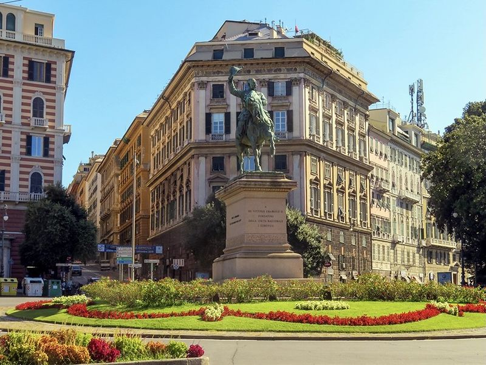
Piazza Corvetto
The site forms part of Piazza Corvetto's documented civic and cultural landscape within Genoa, with archives and visitor information available from municipal or regional heritage authorities. The site forms part of Piazza Corvetto's documented civic and cultural landscape within Genoa, with archives and visitor information available from municipal or regional heritage authorities.
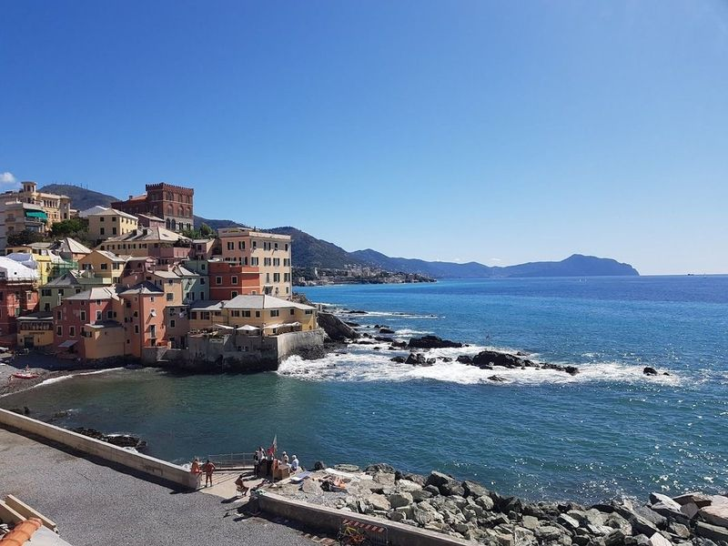
Boccadasse Beach
Boccadasse Beach in Genoa is a small and charming cove with a cobblestone shore, offering a unique and picturesque setting. The warm waters are perfect for a relaxing dip, and the evening vibe adds to its special atmosphere. Surrounded by colorful houses, this beach exudes charm and history. It's an intimate spot with cozy restaurants nearby, making it ideal for enjoying a meal with a view.
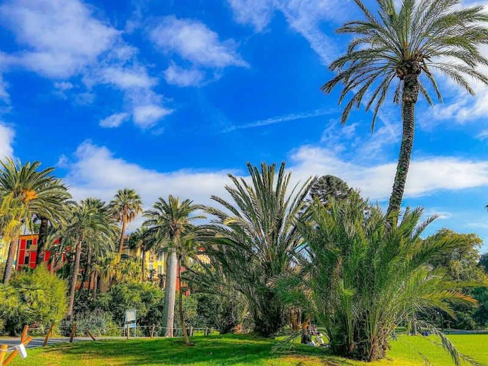
Parchi Storici di Nervi
Nestled along the coastline of Nervi, Parchi di Nervi is a delightful escape that combines lush greenery with sea views. This expansive urban park, the largest in the Mediterranean, features beautifully landscaped grounds and award-winning rose gardens that are sure to enchant visitors. Once part of private villas like Villa Saluzzo Serra and Villa Luxoro, these parks now invite everyone to enjoy their serene beauty.